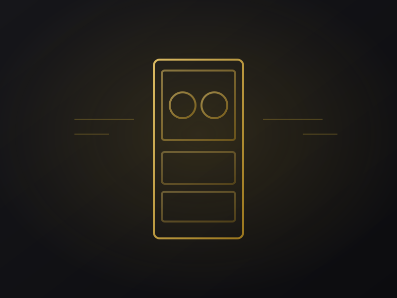

Tested, not assumed
Every second-hand part is checked under load before it earns a place in a build. A card that artefacts, throttles or has a noisy fan doesn't get sold — it gets returned or set aside.
A small workshop with one belief: a good computer shouldn't have to be a new one.
Every hobbyist ends up with the same problem: a drawer of components that still work, and no machine to put them in. Ours turned into a habit of building for friends — first because it was cheaper, then because the machines were better than what the same money bought new.
The parts that age badly are the ones that move: fans, bearings, thermal paste that dries out. The parts that age well are the expensive ones. A five-year-old GPU doesn't get slower because it's old — it gets slower because nobody cleaned it. That gap between what a part is worth and what it costs is the whole business.
So we buy the CPU and GPU second-hand, where the saving is real, and everything around them new: board, memory, storage, power supply, cooler and case. You get a machine that looks and smells new, with two carefully chosen parts inside it — and a price that a shop selling all-new parts can't match.

Every second-hand part is checked under load before it earns a place in a build. A card that artefacts, throttles or has a noisy fan doesn't get sold — it gets returned or set aside.
Cable management, a proper clean and service, and a case that's new because a scratched one undoes everything else. The inside matters as much as the spec sheet.
If a cheaper part does the job for the games you play, we'll say so. If your budget won't get you what you want, we'll say that too — before you've paid a deposit.
Custom builds are the headline, but most weeks are a mix.
A build, an upgrade, or a machine that's misbehaving — we'll tell you honestly what it needs.
Get in touch